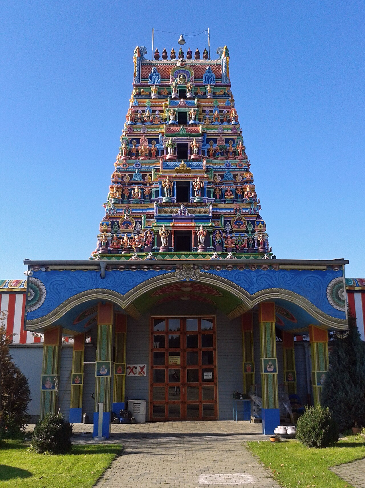

Die nächsten Feste der Community
Tempel, Vereine und Kino in Deutschland, Österreich und der Schweiz.
| Tag | Was | Wer | Wo |
|---|---|---|---|
| So | Deepavali, das Lichterfest | Sivaalayam-Tempel | München |
| So als Nächstes | Deepavali-Feier | Düsseldorf Tamil Sangam | Düsseldorf |
| So | „Jailer 2“ im Kino | Kino Claudia | Kloten |
| Sa | Diwali in Basel | Basel Tamil Sangam | Aula Lysbüchel, Basel |
| So | THADAM 2026, Gala-Nacht | Veranstalter nicht genannt | Bern |

Im Kino ab 9. November
Stand 9. und 12. November| Film | Wo | Kinos |
|---|---|---|
| „Scene“ | Berlin, Bremen, Chemnitz, Dortmund, Düsseldorf und 6 weitere Städte | 11 |
| „OM“ | in Deutschland | 12 |
| „Ramayana: Rise of a Legend“ | Gütersloh, Ravensburg | 2 |
| „Jailer 2“ | Kino Claudia, Kloten, Sondervorstellung am So | 1 |
Steinmeier beim Tempelfest in Hamm-Uentrop: Dank an die tamilische Minderheit
Als Ehrengast sprach der Bundespräsident neben dem Sri-Kamadchi-Ampal-Tempel über Nachbarschaft, die zur Freundschaft wird, und rief zum Schutz der Religionsfreiheit auf.


Das Jahr 2026 in Berichten
September bis November
- Deepavali 2026: Lichterfest in Berlin, Bayern und Düsseldorf
- Vaani Vizha: In den Tamilalayams schrieben Kinder ihren ersten Buchstaben
- Bremen: Vater und Sohn eröffneten das Ceylon Palace mit Küche aus Sri Lanka
- „Sardar 2“ mit Karthi: Deutscher Kinostart war für den 10. September geführt
- Emsdetten: Tamilischer Kultur- und Sportverein stellt sich im Integrationsbeirat vor
- Zürich: Kündigung trifft Restaurant Maneez und tamilische Läden im Kreis 5
Juli und August
- INAIVU in Zürich: Benefizabend mit Musik und Tanz für Sehbehinderte in Sri Lanka
- Bundestagsdrucksache: 14 Abschiebungen nach Sri Lanka im ersten Halbjahr 2026
- Steinmeier beim Tempelfest in Hamm-Uentrop: Dank an die tamilische Minderheit
- Koovagam-Fest im Film: „Bride of Aravan“ beim Indischen Filmfestival Stuttgart
Mai und Juni
- Mahotsavam im Sivan Kovil Glattbrugg: zwölf Festtage, Wagenfest am 27. Juni
- Frankfurt, Duisburg, Dortmund: Drei tamilische Straßenfeste für 2026 angekündigt
- München: Namma Tamil Nadu Food Fest mit sechs Regionalküchen
- Berlin: Sri Ganesha Hindu Temple an der Hasenheide geweiht
- Bundesverwaltungsgericht hält nach Regierungswechsel in Sri Lanka an Asylpraxis fest
- Sri Lanka erlässt Reisenden aus Deutschland, Österreich und der Schweiz die Visagebühr
- Leuk: Tausende tamilische Katholiken feierten Lourdes-Fest und 20 Jahre Mission Aargau